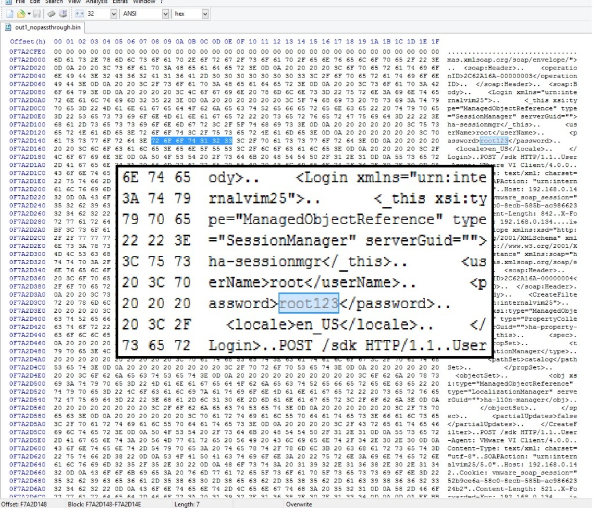

Blog
IPMI and New Challenges in Cloud Server Security
Integrated Platform Management Interface (IPMI) controllers ship on practically every x86 server, and any large IT monoculture provides an attractive target for bad guys. While offering increased manageability for cloud servers, the abundance of IPMI controllers in cloud environments poses new threats for cloud users, spanning from remote, over-the-web exploitation to local network attacks from cohabiting cloud tenants.

Alon Nafta
Being enabled and connected by default on many systems, IPMI controllers expose unaware users to various threats, orthogonal to the ones they currently protect against, which mostly relate to malware and web-based attacks.
Often overlooked by administrators, ensuring proper IPMI tenant isolation is a key step in protecting against IPMI-based attacks. We were able to demonstrate the usage of a low-footprint memory scraping tool to collect root passwords, keys and other valuable data from memory of remote servers, using an easy-to-accomplish attack sequence.
Background
IPMI has recently made news headlines following two notable and impressive pieces of security research work: the first by Dan Farmer in January, followed by HD Moore in July. A month ago, Rapid7 disclosed software vulnerabilities in Supermicro server firmware. The combination of these results makes the case for practical remote server exploitation, found affect approximately 35,000 servers and potentially many more.
IPMI 101
IPMI provides on-board hardware and software, allowing remote Command & Control communications to servers. IPMI is implemented in most x86 servers and apparently enabled by default in many of them. Technically, it is handled by an on-board Baseboard Management Controller (BMC). IPMI provides functionality that would otherwise require physical presence: display, keyboard and mouse, virtual media, and power management, even when the machine is shutdown. To grasp what can be done via IPMI, one simply has to imagine that the attacker is standing next to your machine with fingers on the console keyboard.
Several unique features of IMPI are noteworthy in the context of threat assessment:
- On many systems, IPMI communication is possible through a single Ethernet port. That means that if it’s enabled (through BIOS), IPMI is exposed to the network the server is functionally using. To be fair, the IPMI BMC would have to be assigned an IP address, but that will usually be taken care of automatically by DHCP, something that is present in most networks. HD Moore and Rapid7 were able to discover 35K exposed IPMI interfaces of solely Supermicro servers. Clearly, potential for widespread damage is huge.
- There is no open source implementation for IPMI BMC controllers – every vendor makes its own, closed-source implementation. That leaves room for many potential bugs, and very few (responsible) eyes searching for them.
- Similarly to BIOS updates, IPMI firmware updates are hard to manage, and are in the early stages of being recognized as a viable threat by the compliance and pentesting communities. While BIOS and network equipment firmware updates are covered by compliance standards (e.g. PCI DSS, etc.) and pen testing routines, BMC firmware updates are commonly overlooked. Interestingly enough, most of them are also Chinese.
Other bad security practices, such as unchanged default passwords and needing Java to communicate with IPMI controllers, as well as weak encryption schemes, are worrisome. PrivateCore identified many vendors utilizing TLS 1.0 with 128-bit RC4-based encryption, widely considered as broken, for connecting to the IPMI HTTPS server. The HTTP server also uses untrusted certificates, making the case for easy-to-fake Man in the Middle (MITM) attacks, exploiting poor administrators running unpatched JAVA clients.
IPMI Exploitation DIY
To demonstrate the relative ease in exploiting a vulnerable server via IPMI, we conducted the following attack exercise in our own network, simulating a typical cloud environment:
-
Scan for IPMI interfaces: Using nmap, we scanned our network for IPMI controllers, easily discoverable by their unique use of port 623.
-
Vendor identification: Several servers have been found. Identifying the vendor is easy, simply browse to that IP and look at the displayed server brand logo. Programmatically, than can be implemented by parsing HTTP packets from the IPMI controller.
-
Connecting to servers: The is a trickier part. Not all servers block entries for wrong credentials, leaving room for brute-force and dictionary attacks. Many servers maintain their default passwords, or use a single password for all servers, mostly due to administrator ignorance or laziness. And then there are vulnerabilities, which PrivateCore (and others) consider to be common.
-
Attaching virtual media: Attaching virtual media is supported by every IPMI controller, as it is one of its key features. An attacker would need to convert its malicious payload to a bootable CD ISO image, that can then be deployed to the remote server via the IPMI user interface.
-
Reset: We reset the server using the IPMI power management controls
-
Collecting memory: We used a small-footprint memory “scraping” tool to remotely collect memory. These two tools – tool_1, tool_2 will do the trick.
-
Collecting rewards: There is really no need to argue why a full memory dump is not something you want your attackers to have, but one that can be done remotely is a whole new game. Hidden gems in memory, such as root passwords and cryptographic keys, are valuable treasure, allowing easy control without having to restart the server again.

Two caveats:
-
Error Correcting Code (ECC) memory: Many modern servers use ECC memory, which is zeroed out by the BIOS during boot. Conveniently, some BIOSes allow to disable that function (1 out of 3 vendors in our mini-experiment, all VERY popular).
-
BIOS patching: BIOS updates are also generally possible, in case the BIOS doesn’t support ECC disable (although obviously this increases the complexity of this attack), or if the BIOS is password-locked.
Conclusion
When running on the cloud, one must trust the cloud provider to maintain good security practices, ensure high isolation between tenants and continuously update their software as well as security mechanisms. As cloud infrastructure scales, the potential attack surface grows, the risk of compromise increases, and control measures are not keeping pace. Large-scale architectures and complicated IT measures are a hidden treasure for attackers who can easily find their way in, commonly by user-made configuration mistakes, reinforced by exploiting server vulnerabilities.
One of the better ways to avoid these issues is changing the game for attackers. Rather than building more walls (or, using a more appropriate metaphor, keep fixing the holes in the existing walls), apply a solution that inherently protects the data by attesting the environment and keeping all data (memory, storage, network traffic) encrypted. At all times.
The Fallacy of Shared Responsibility in the Cloud
Sharing is usually considered to be a positive attribute – parents teach children to share and we are moving into a “sharing economy” with services like Zipcar and Airbnb. For most businesses and the security of their sensitive data, sharing is a threat. In fact, numerous laws have been created to curb or manage sharing including copyright provisions designed to protect music, books, software and more. Cloud security is no exception. For businesses, sharing responsibility for the security of their data with a cloud service provider can lead to unpleasant consequences and finger-pointing. For years, standards bodies like the PCI Council and leading cloud providers like Amazon Web Services and Microsoft Azure have fostered the perception that shared responsibility for security in the cloud with infrastructure as a service (IaaS) providers is the best approach. Times have changed, this is no longer the case.

Todd Thiemann
What is the downside of shared responsibility in the cloud? The enterprise has ultimate accountability for security of its data, yet must share the responsibility for data security with the Cloud Service Provider (CSP). Put another way, shared responsibility means shared access to your sensitive data. You share responsibility for security of the overall environment, but implicit in that relationship is that your CSP can access your data. You might not like it, but the shared responsibility model forces you to trust the CSP and face the consequences when the CSP falls short. Amplifying these consequences for the enterprise are CSP terms of service that are typically one-sided and hand the aftermath of breached data to the enterprise customer. Consequences can include fines, reputational risk, and lost competitive advantage – items that would not be covered by a CSP refunding your payment. The shared responsibility model also requires elaborate and time-consuming legal contracts so the obligations of the CSP and the enterprise are understood. While shared responsibility can be mitigated in a Software-as-a-Service (SaaS) where the SaaS vendor is fully accountable for data loss, it does not make sense in the Infrastructure-as-a-Service (IaaS) world where IaaS vendors significantly (Amazon EC2, etc.) limit their responsibility for security.
While the CSP needs to provide their service with sufficient security to satisfy customers, the CSP is usually not the one holding the bag when something goes wrong. Interest in cloud encryption has grown as enterprises wrestle with securing their data at the CSP. Enterprises understand the need to secure their data while at rest and while in transit by holding the encryption keys themselves. However, the shared responsibility model circumvents at-rest and in-transit encryption; the cloud service provider can access enterprise data-in-use while the cloud server runs in the CSP datacenter. Data-in-use, or memory, contains secrets including encryption keys, digital certificates, and sensitive information such as intellectual property. Accessing data-in-use leaves the door open to lawful or unlawful interception of data of any data on the server. Sensitive data can be encrypted at rest or in motion, but it is “in the clear” and available to the CSP while in use.
What if a new technology allowed you to have control and visibility into the security of cloud servers without ever having to set foot in a cloud data center? PrivateCore does just that, allowing the enterprise to take complete ownership of data security rather than relying on the CSP. This approach also permits the CSP to focus on their core competencies and reduce liabilities. PrivateCore vCage provides a secure foundation, ensuring that nobody at the CSP can access or manipulate your data without your consent. Deploying vCage as a foundation of trust for your IaaS security enables you to avoid lengthy security negotiations because you control the security of your server and its data.
PrivateCore vCage secures server data-in-use with full memory encryption. Data-in-use can contain valuable information such as encryption keys for data-at-rest, certificates, intellectual property, and personally identifiable information. Accessing data-in-use provides a pathway to decrypt data-at-rest and data-in-motion. Compromising data-in-use, be it through a malicious insider or lawful request, leaves a system open and available.
While security measures such as data-at-rest and data-in-motion encryption are necessary, they are insufficient if the foundation has a crack that allows information to be siphoned off. PrivateCore vCage changes the game, obviating the need for “shared responsibility” by providing a foundation of trust in the cloud so you can take control of the security of your data in the cloud.
vCage and KVM+libvirt – A Good Match

One of the questions that regularly crops up as we talk with technologists about PrivateCore’s vCage is how vCage fits into their existing IT infrastructure. vCage makes use of KVM (Kernel-based Virtual Machine) to run virtual machine instances, allowing vCage to run unmodified applications on our secure platform. KVM is an open source product supported by many leading industry players including IBM, Cisco, Intel, RedHat, Ubuntu, and SuSE. KVM has the ability support a wide array of operating systems transparently via full virtualization. In addition, guest virtual machines can make use of the paravirtualized virtio drivers in both Linux and Windows for enhanced I/O performance.
Broad guest operating system support
KVM’s impressive breadth of operating system support enables vCage users to port their existing applications from their current systems to the vCage platform without having to make modifications. This makes vCage a transparent layer that adds security without impacting application development.
Managing VM instances
Paired with KVM, vCage makes use of libvirt, a virtualization management API that is widely used. Libvirt provides a set of APIs and tools for managing virtual machine instances, providing tools to create, monitor, and manage virtual machines running on vCage. When paired with PrivateCore’s own management tools, vCage users can securely create and manage their virtual machines to run applications.
Leveraging the power of Open Source
PrivateCore’s use of KVM and libvirt allows us to debut with a rich management toolset while opening the door for integration with existing cloud infrastructures such as OpenStack. Using libvirt may also enable PrivateCore to provide alternative methods of running application workloads, for example via LXC (Linux Containers).
Focusing on our core goals
Making use of powerful, well supported, tools like KVM and libvirt is important for PrivateCore and to people deploying vCage. These tools allow us to focus our energies on our core security offerings, knowing that we can trust on projects like KVM and libvirt to provide PrivateCore and enterprises using vCage with the ability to run and manage applications on the vCage platform. If you want to see how this all fits together, sign up for our beta program and give it a try.
Can you trust your server hardware?

Steve Weis
We’ve recently seen a spate of news stories about hardware-based attacks. For instance, two recent attempted bank heists at Bank Santander and Barclay’s involved criminals stealing millions of dollars via malicious hardware devices. More concerning, recently leaked documents indicate that the NSA may have collaborated with hardware manufacturers to subvert cryptographic hardware implementations. Researchers recently proposed new ways to create hardware backdoors at the sub-gate level, making it hard to detect even to someone inspecting circuit layouts. But are these hardware risks relevant to servers that we use in the cloud?
Malicious hardware and your server
Modern servers are comprised of many components: processors (CPUs), memory (RAM), disks, buses, network cards, and human interface devices. Each of these components pass through the hands of manufacturers, vendors, supply chains, integrators, and service personnel before ultimately ending up inside servers processing your sensitive data. That server itself may be housed off-premise or be leased from another organization, such as a cloud service provider. Most organization rely on at least some servers that are outside their physical control.
The risk with this loss of control is that is that anyone with access to those components, at any moment in time, could compromise a component or substitute a malicious device in its place. There are many well known boot integrity vector attacks where an attacker could subvert firmware in a system, for example the “Evil Maid Attack”.
Network cards are particularly risky since they have Direct Memory Access (DMA) to all system memory and can exfiltrate stolen data over the network. Some network devices have been found to have remotely exploitable vulnerabilities that allow an attacker to take control of the card and subsequently the host system.
Memory is the new disk
Enterprises are increasingly adopting in-memory architectures to reduce application latency. However, as in-memory architectures become more common, more sensitive data is persisted in memory for long periods of time. While commonly used RAM is generally volatile, it can actually persist its contents after a system loses power. This allows an attacker to literally freeze memory and read its contents in what’s called a “cold boot” attack.
More worrisome, RAM is becoming more persistent with technologies like non-volatile memory in DDR3 form factors. By design, these memory technologies persist contents of memory when power is lost — just like a disk. Attackers could simply walk away with a memory DIMM containing not only private data and software, but also critical cryptographic keys used to secure data at-rest encryption.
Reducing the security perimeter
PrivateCore’s philosophy to addressing vulnerabilities in hardware and the risk of persistent memory is to minimize the number of components that users must trust in a server. With today’s technology, it’s possible to reduce a server’s security boundary to just one component: the CPU. From just the CPU, it’s possible to establish a trusted compute base safe from the rest of the components in the system.
Protecting against hardware threats is not easy. Some organizations closely audit their supply chains to ensure the provenance of firmware and devices in their systems, and operate their servers in tightly controlled physical environments. For cloud environments or remote locations, this may not be an option. In those cases, minimizing the trust perimeter to a single component may be the best option to reduce the threat of hardware vulnerabilities and protect sensitive data in-use.
Lawful Interception and Data Security

As the news around NSA information collection and Edward Snowden continues to dribble out, something that is grabbing the attention of enterprises around the world the topic of “lawful interception”. The lawful intercept topic has cruised under the radar for a number of years (I was surprised to see the variety of vendor products enabling interception when I googled “lawful interception”), but Mr. Snowden brought it to the fore. Companies around the globe are rethinking security of their data in light of security and data sovereignty issues raised by the NSA Prism program.
What is lawful interception? While it sounds like a term used in American football, it is a serious issue of concern to most enterprises. National governments can request service providers (think Google, Yahoo, Amazon, etc) to provide customer information for analysis or investigation in the name of national security. There are various legal vehicles – The US has various laws including the Foreign Intelligence Surveillance Act (think of National Security Letters), the UK has its Regulation of Investigatory Powers Act, etc. The basic concept is the same – your friendly national government can knock on the service provider’s door and request information relevant to a national security issue. The service provider holding your information could be compelled in the name of national security to hand it over to the authorities.
Service providers are legally compelled to respond while not informing customers that their information is being provided to the government. If you are an enterprise with your information in the public cloud, the service provider could hand over your information to the authorities pursuant of an investigation without your knowledge. Enterprises typically want to know if their information is being handed over by their service providers so they can prepare themselves.
How does encryption play in this? You would think that if your cloud data is encrypted, is is safe from prying eyes. Not necessarily. This is a tricky issue that hinges on a few variables:
-
Who holds the encryption keys?
-
Where is the encrypted data stored?
-
Who controls the server hardware?
With those variables in mind, below are a few potential scenarios to consider:
Infrastructure-as-a-Service with IaaS encryption/keys- Enterprises with sensitive data in the cloud can secure their data with encryption, but that data is open to lawful interception if the service provider holds the encryption keys. One example of this is Amazon S3 encryption – Amazon holds the keys and could be compelled to hand the data and keys to the authorities.
IaaS with enterprise-controlled keys – an enterprise could deploy their own encryption and keys to the cloud, while keeping those keys stored in their enterprise office. However, this provides a false sense of security. Authorities could still request encrypted data and a snapshot of memory from the Cloud Service Provider and parse that memory to get the encryption keys for the data at rest. Unless you are securing not only the data-at-rest, but also the data-in-use (memory), the authorities could access your data unbeknownst to you.
Gateway Encryption for Software-as-a-Service – For SaaS environments, the enterprise typically needs to rely on their SaaS provider to secure data. However, gateway encryption solutions can encrypt or tokenize SaaS data at the enterprise edge so that the SaaS provider is only dealing with ciphertext and not clear text. If the authorities come knocking, they have to knock on the enterprise door to access the data.
What are questions you should be asking internally or of your service provider when it comes to lawful interception?
-
Is my cloud data encrypted? Encrypting sensitive data in the cloud is a best practice. If it is not encrypted, then accept that a lawful intercept request could occur and your information could be provided to the authorities without your knowledge. If your cloud SaaS data is encrypted at the enterprise gateway, the authorities have to knock on your door to access it. If the cloud IaaS data is encrypted, then you need to ask the next question.
-
Where are the encryption keys? Do I hold them or does the cloud service provider hold them? If the CSP holds the keys, your data can be compromised without your knowledge. The CSP could be compelled to deliver the data plus keys to decrypt the data. If the enterprise holds the keys, the authorities will have to knock on the enterprise door and say “Give me the keys” and unlock the cloud data. the data is more secure but could still be compromised; the authorities would need to jump through some hoops to do so (decrypting data using keys parsed from memory).
-
Is my server memory secure? If the memory is not secure, the authorities can ask for the encrypted data-at-rest as well as a snapshot of the data-in-use (memory) and parse that memory for the encryption keys.
Lawful intercepts are the flip side of unlawful intercepts. You might want to know if the authorities are sniffing at your data so you are fully informed, but you also will want to know if some malicious insider within the CSP might be compromising your data. Considering the lawful intercept issue also addresses the rogue insider problem.
The core (in)security problem of cloud computing
{kind=link}
If you’re reading this blog, you might be wondering what this PrivateCore thing is all about. I want to give you some perspective on the company, the problems we intend to solve, and why I believe it will leave a dent in the security universe.
What was the big problem that I saw that motivated me to co-found PrivateCore? I’ve been in this industry for over 20 years, most of the time building information security products. At my core, I am a security technologist trying to deliver value in the real world.
As I looked around the industry a few years back, I saw virtualization taking over the data-center and how virtualization-enabled infrastructure-as-a-service (IaaS, AKA cloud computing) was taking off. While the cloud’s agility, scale, and pay per use model offer enterprises great value, it was clear to me that cloud (in)security will be a top concern for the enterprise.
Virtualized Does Not Mean Magically Secure
Virtualization allows for the decoupling of virtual machines from the underlying hardware, making it possible to move computation around without requiring changes to the source code or the binaries of existing applications. Virtualization gave birth to cloud computing, but it did not made it secure.
The ability to consume computation as a service does not remove the enterprise need for security, and enterprises expect the same security controls in the cloud as they have in their own private data-centers. Indeed, most security controls such as network security, access controls, patch management, and application configuration, can be deployed as software solutions by the enterprise. However, there is one group of controls with which the enterprise struggles: physical security controls.
The Physical Access Gap
With physical access you don’t need to hack your way into the network, you can simply walk away with the data. Back in the enterprise data-center, physical security controls protect against physical extraction of data. With physical controls in the hands of the cloud providers, enterprises find a whole new set of people roaming unnoticed around “their” share of the cloud provider data-center, starting with the cloud provider employees, sub-contractors, and sometimes even government agencies armed with subpoenas looking to get access to data.
The concept that started dominating my brain was: how can enterprises secure their data in the absence of traditional physical security measures that the enterprise directly controls?
To eliminate the obvious, let me quickly explain why traditional data-at-rest encryption and data-in-transit encryption can not mitigate the “physical backdoor” problem. The flaw with these technologies in the cloud is that even when data is encrypted on disk and on the network, the data must be decrypted for processing. This leaves the data, as well as encryption keys, out in the clear to be grabbed via physical access.
To put it in simple and familiar terms, we use network encryption such as https, or vpn so we could use public networks, knowing that if an adversary can sniff (i.e. read) the network traffic, she will only see encrypted data rather than our plain text conversation. Similarly, an adversary with physical access to our server in the cloud, can “sniff” the memory, and access the information we process by exploiting his physical presence. It is this unfortunate truth that today requires us to trust that our cloud provider and their affiliates will resist the temptation to peek into our data in use.
PrivateCore: Building The Foundation for Secure Computing
I started PrivateCore with the purpose of solving this problem. To create the technology that will once and for all provide a secure computation environment, an environment in which cloud providers will not have the option of peeking into enterprise data flowing through their compute infrastructure. A technology enterprises can leverage and use on their own terms, to secure public computation just as they secure todays public networks and public storage.
So, that is the brief version the origin of PrivateCore and how we’re challenging the assumption that having physical access to hardware means you can gain unauthorized access to data. In future blog postings, I and the rest of the PrivateCore team plan to periodically blog about industry happenings, what we are up to, and ways we see to improve enterprise data security. Please join the conversation and share your opinion and viewpoint!